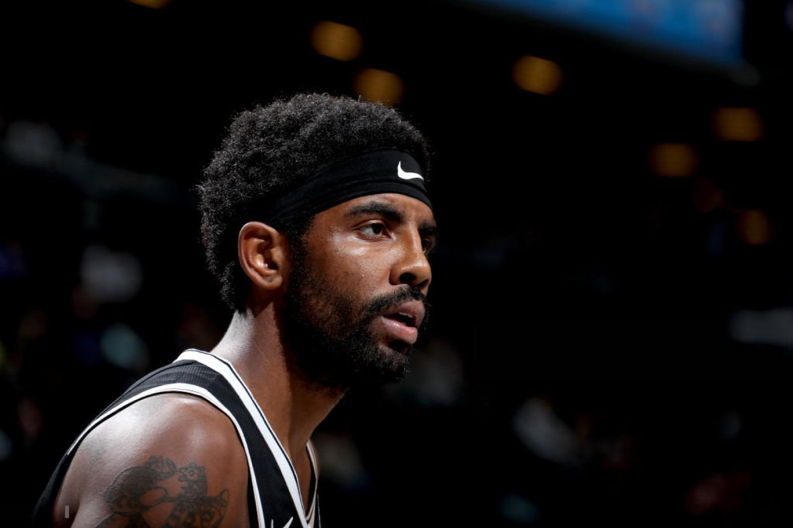

Attack kaleidoscope

凯里·欧文（Kyrie Irving），全名凯里·安德鲁·欧文（Kyrie Andrew Irving），1992年3月23日出生于澳大利亚墨尔本，美国职业篮球运动员，司职控球后卫，效力于NBA达拉斯独行侠队。凯里·欧文于2011年以选秀状元身份进入NBA，先后效力于骑士队、凯尔特人队、篮网队以及独行侠队；新秀赛季当选最佳新秀；2014年首次入选全明星正赛先发阵容，并当选全明星赛最有价值球员；2014-15赛季入选最佳阵容第三阵容；2015-16赛季随骑士队夺得NBA总冠军；2017-18赛季荣获年度运球奖；2018-19赛季入选最佳阵容第二阵容；2020-21赛季入选最佳阵容第三阵容；8次入选NBA全明星阵容。凯里·欧文于2014年代表美国男篮征战男篮世界杯，随队获得冠军并当选MVP。2016年里约奥运会，凯里·欧文随美国男篮夺得金牌。2019年福布斯100名人榜，凯里·欧文排名第74位。